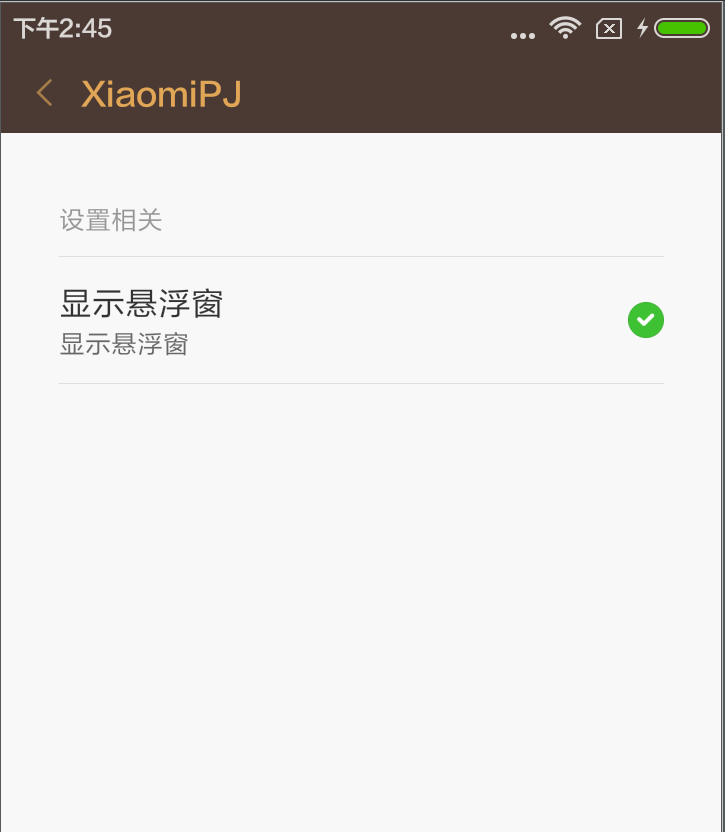
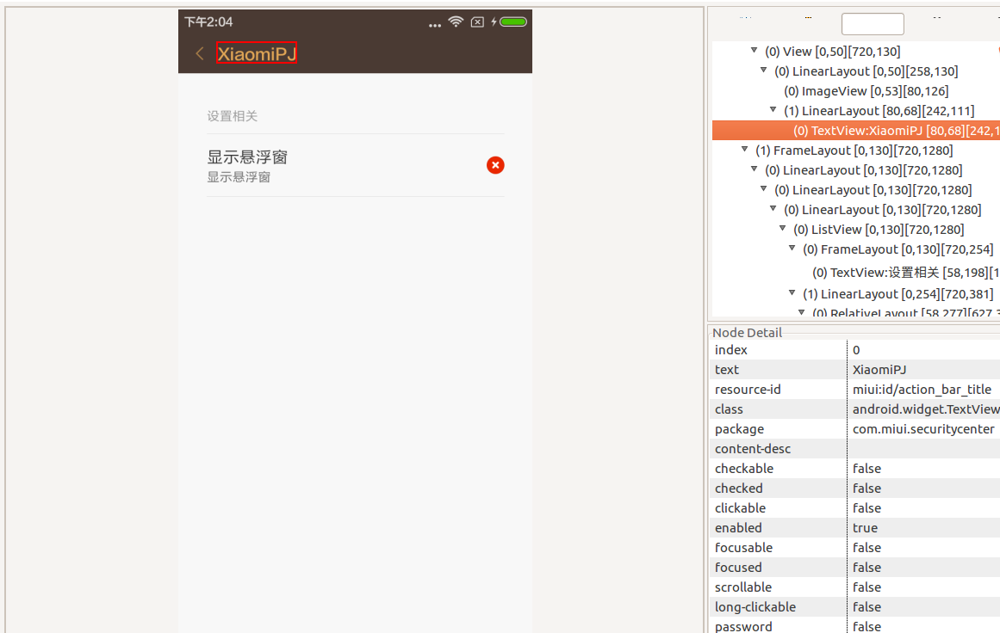

最近做项目遇到小米手机比较人(zhuang)性(bi)化的悬浮窗权限，当在小米手机上安装完应用后默认是关闭这个权限的，需要用户手动到应用详情页打开该权限。
重(keng)要(die)的是使用这个权限开关系统window后， 小米手机不给任何提示就是不给弹窗。一开始以为是自己代码逻辑写错了，半天才反应过来，小米还有个这个权限，当天6.0以上安卓系统也需要这个权限，但是会有log提示的。
这么麻烦的操作怎么可能让用户自己去找应用详情然后开启操作呢？本文将实现一键开启小米悬浮窗权限！
分析问题
想要实现自动调整到改应用的详情页的权限管理页面，就要知道权限管理页的类名及包名，我们又没有小米rom的源码，怎么才能知道指定页面的相关信息呢？
查看权限页面类名
这个方法应该有很多中，但是我只验证了一种：想到了 adb shell dumpsys activity
usb链接电脑后，手动打开应用的详情页面里的权限管理页面:

类名信息: com.miui.securitycenter/com.miui.permcenter.permissions.AppPermissionsEditorActivity
构造跳转Intent
知道到了要跳转的activity,我们直接构造Intent 是否可以直接跳过去?
答案肯定是不行的. Intent 需要构造参数,来区分指定app的权限管理页面:
1 2 3 4 5 6 7 8 9 10 11 12 13 14 15 16 17 18 19 20 21 22 23 24 25 26 27 28 29 30
| * 经测试V5版本是有区别的 * @param context */ public void openMiuiPermissionActivity(Context context) { Intent intent = new Intent("miui.intent.action.APP_PERM_EDITOR") if ("V5".equals(getProperty())) { PackageInfo pInfo = null try { pInfo = context.getPackageManager().getPackageInfo(context.getPackageName(), 0) } catch (PackageManager.NameNotFoundException e) { Log.e("canking", "error") } intent.setClassName("com.miui.securitycenter", "com.miui.securitycenter.permission.AppPermissionsEditor") intent.putExtra("extra_package_uid", pInfo.applicationInfo.uid) } else { intent.setClassName("com.miui.securitycenter", "com.miui.permcenter.permissions.AppPermissionsEditorActivity") intent.putExtra("extra_pkgname", context.getPackageName()) } if (isActivityAvailable(context, intent)) { if (context instanceof Activity) { Activity a = (Activity) context a.startActivityForResult(intent, 2) } } else { Log.e("canking", "Intent is not available!") } }
|
测试适配rom
经测试V5版本和后续版本是后区别的, 分别需要app ID和pkgname. 为了区分V5版本,我们需要得到小米rom的版本名:
1 2 3 4 5 6 7 8 9 10 11 12 13 14
| public static String getProperty() { String property = "null"; if (!"Xiaomi".equals(Build.MANUFACTURER)) { return property; } try { Class<?> spClazz = Class.forName("android.os.SystemProperties"); Method method = spClazz.getDeclaredMethod("get", String.class, String.class); property = (String) method.invoke(spClazz, "ro.miui.ui.version.name", null); } catch (Exception e) { e.printStackTrace(); } return property; }
|
该反射方法来自网络,经验证是有效的.
这样我们就跳转到了指定应用的权限管理页面.

实现一键打开
标题已经写了,我们的目标是用户一键开启,入口做到一键就能开启小米rom悬浮窗权限呢? 可以利用安卓辅助功能自动帮用户跳转, 自动点击打开权限,完成操作后返回.
这里写了个BaseAccessibilityService 通用的操作方法封装在这里.
1 2 3 4 5 6 7 8 9 10 11 12 13 14 15 16 17 18 19 20 21 22 23 24 25 26 27 28 29 30 31 32 33 34 35 36 37 38 39 40 41 42 43 44 45 46 47 48 49 50 51 52 53 54 55 56 57 58 59 60 61 62 63 64
| * Created by changxing on 16-6-2. */ public class BaseAccessService extends AccessibilityService { @Override protected void onServiceConnected() { ....super.onServiceConnected(); } @Override public void onInterrupt() { } @Override public void onAccessibilityEvent(AccessibilityEvent event) { } protected boolean clickByText(AccessibilityNodeInfo nodeInfo, String str) { ....if (null != nodeInfo) { .... List<AccessibilityNodeInfo> list = nodeInfo.findAccessibilityNodeInfosByText(str); .... if (null != list && list.size() > 0) { .... AccessibilityNodeInfo node = list.get(list.size() - 1); .... if (node.isClickable()) { .... return node.performAction(AccessibilityNodeInfo.ACTION_CLICK); .... } else { .... AccessibilityNodeInfo parentNode = node; .... for (int i = 0; i < 5; i++) { .... if (null != parentNode) { .... parentNode = parentNode.getParent(); .... if (null != parentNode && parentNode.isClickable()) { .... return parentNode.performAction(AccessibilityNodeInfo.ACTION_CLICK); .... } .... } .... } .... } .... } ....} ....return false; } protected AccessibilityNodeInfo findOpenButton(AccessibilityNodeInfo node) { ....if (node == null) .... return null; .... ....if (node.getChildCount() == 0) { .... if ("android.widget.Button".equals(node.getClassName())) { .... return node; .... } else .... return null; ....} .... ....for (int i = 0; i < node.getChildCount(); i++) { .... AccessibilityNodeInfo button = findOpenButton(node.getChild(i)); .... if (button != null) .... return button; ....} ....return null; } }
|
继承这个class ,重写onAccessibilityEvent ,在该方法内处理具体逻辑:
到这里只监听TYPE_WINDOW_STATE_CHANGED类型就行了.通过控件的TEXT来实现找到需要点击的控件.
这里可以Dump View hierarchy工具来查看我们想要的控件具体信息.

1 2 3 4 5 6 7 8 9 10 11 12 13 14 15 16 17 18 19 20 21 22 23 24
| @Override public void onAccessibilityEvent(AccessibilityEvent event) { int eventType = event.getEventType(); XLogger.v("eventType:" + eventType); switch (eventType) { case AccessibilityEvent.TYPE_WINDOW_STATE_CHANGED: String clazzName = event.getClassName().toString(); AccessibilityNodeInfo nodeInfo = event.getSource(); XLogger.i( "悬浮窗：" + clazzName); if (clazzName.equals("com.miui.permcenter.permissions.AppPermissionsEditorActivity")) { if (end) { clickByText(nodeInfo, "XiaomiPJ"); } else { boolean access = clickByText(nodeInfo, "显示悬浮窗"); XLogger.i("access" + access); } } if (clazzName.equals("miui.app.AlertDialog")) { end = clickByText(nodeInfo, "允许"); XLogger.i( "getClick:" + end); } } }
|
到这里就可以实现一键开启小米rom悬浮窗权限了
但是一键开启前我们需要判断,该权限是否已经开启:
1 2 3 4 5 6 7 8 9 10 11 12 13 14 15 16 17 18 19 20 21 22 23 24 25 26 27 28 29 30 31 32 33 34 35 36 37 38 39 40 41 42 43 44 45 46
| * 判断MIUI的悬浮窗权限 * @param context * @return */ @TargetApi(Build.VERSION_CODES.KITKAT) public static boolean isMiuiFloatWindowOpAllowed(Context context) { final int version = Build.VERSION.SDK_INT; if (version >= 19) { return checkOp(context, 24); } else { if ((context.getApplicationInfo().flags & 1 << 27) == 1 << 27) { return true; } else { return false; } } } @TargetApi(Build.VERSION_CODES.KITKAT) public static boolean checkOp(Context context, int op) { final int version = Build.VERSION.SDK_INT; if (version >= 19) { AppOpsManager manager = (AppOpsManager) context.getSystemService(Context.APP_OPS_SERVICE); try { Class<?> spClazz = Class.forName(manager.getClass().getName()); Method method = manager.getClass().getDeclaredMethod("checkOp", int.class, int.class, String.class); int property = (Integer) method.invoke(manager, op, Binder.getCallingUid(), context.getPackageName()); XLogger.e(AppOpsManager.MODE_ALLOWED + " invoke " + property); if (AppOpsManager.MODE_ALLOWED == property) { return true; } else { return false; } } catch (Exception e) { XLogger.e(e.getMessage()); } } else { XLogger.e("Below API 19 cannot invoke!"); } return false; }
|
api>=19需要用反射来活取系统相关配置信息,应该也适用于魅族手机,为验证.
这里我们就实现了一键开启小米Rom悬浮窗权限,并且实现了判断是否已经开启了该权限状态.
本Demo相关源码地址: https://github.com/CankingApp/XiaomiPJ